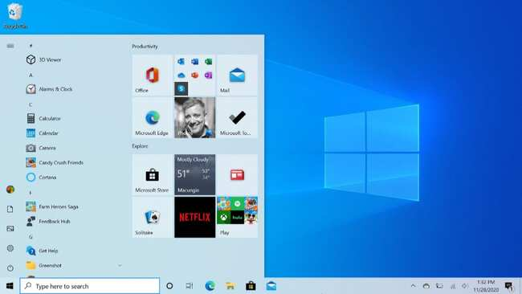

Windows 10

Windows 10 Was one of the longest running operating systems from Microsoft for desktops and tablets . It is the successor of windows 8.1 which introduced a new touchscreen based user interface (UI) . Windows 10 however introduces support for universal apps which is an updated version of the metro style apps in windows 8.1 . Windows 10 receives feature and security updates frequently for users at no cost . It also brings back the traditional start menu with a new refreshing style . It is the first operating system to support direct x 12 which is the latest application programming interface which can handle multimedia and video games on Microsoft platforms .
Since Windows 7 , all windows operating systems were shipped with windows defender , Microsoft's own built in antivirus software . The latest version (1909) however gets major updates for this software . Additional security features like facial recognition and fingerprint recognition have been implemented via a feature called windows hello . In spite of addition of all these features windows 10 however seems to have the same system requirements as windows 7 . Windows 10 also introduces a new web browser Microsoft Edge . It is a huge upgrade over the traditional internet explorer which once was the greatest web browser in the world .
Windows 10 incorporates multi-factor authentication technology based upon standards developed by the FIDO Alliance. The operating system includes improved support for biometric authentication through the Windows Hello platform. Devices with supported cameras (requiring infrared illumination, such as Intel RealSense) allow users to log in with iris or face recognition, similarly to Kinect. Devices with supported readers allow users to log in through fingerprint recognition. Support was also added for palm-vein scanning through a partnership with Fujitsu in February 2018. Credentials are stored locally and protected using asymmetric encryption.
Windows 10 introduces a new default web browser, Microsoft Edge. It initially featured a new standards-compliant rendering engine derived from Trident, and also includes annotation tools and integration with other Microsoft platforms present within Windows 10. Internet Explorer 11 is maintained on Windows 10 for compatibility purposes, but is deprecated in favor of Edge and will no longer be actively developed. In January 2020, the initial version of Edge was succeeded by a new iteration that is derived from the Chromium project and Blink layout engine.
Windows 10 incorporates Microsoft's intelligent personal assistant, Cortana, which was first introduced with Windows Phone 8.1 in 2014. Cortana replaced Windows' embedded search feature, supporting both text and voice input. Many of its features are a direct carryover from Windows Phone, including integration with Bing, setting reminders, a Notebook feature for managing personal information, as well as searching for files, playing music, launching applications and setting reminders or sending emails. Cortana is implemented as a universal search box located alongside the Start and Task View buttons, which can be hidden or condensed to a single button.
Windows 10 provides heavier integration with the Xbox ecosystem. Xbox SmartGlass is succeeded by the Xbox Console Companion (formerly the Xbox app), which allows users to browse their game library (including both PC and Xbox console games), and Game DVR is also available using a keyboard shortcut, allowing users to save the last 30 seconds of gameplay as a video that can be shared to Xbox Live, OneDrive, or elsewhere. Windows 10 also allows users to control and play games from an Xbox One console over a local network. The Xbox Live SDK allows application developers to incorporate Xbox Live functionality into their apps, and future wireless Xbox One accessories, such as controllers, are supported on Windows with an adapter. Microsoft also intends to allow cross-buys and save synchronization between Xbox One and Windows 10 versions of games; Microsoft Studios games such as ReCore and Quantum Break are intended as being exclusive to Windows 10 and Xbox One.